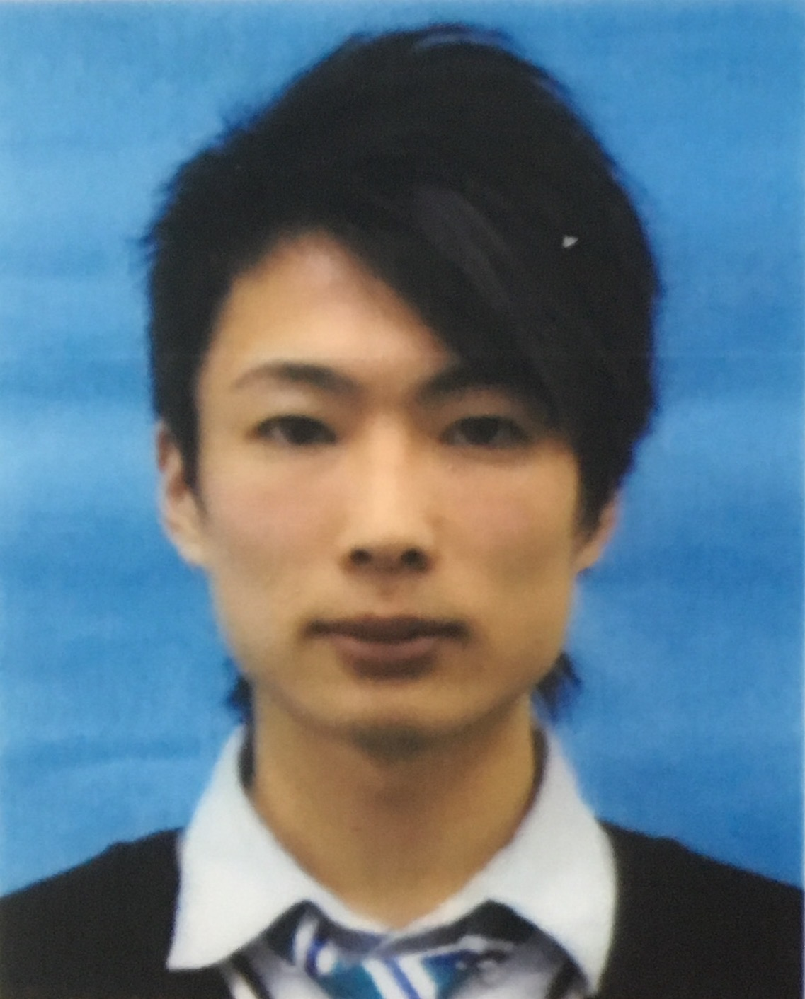

所属：同志社大学 生命医科学研究科 医工学・医情報学専攻 医情報学コース 脳神経行動工学研究室
課程：博士課程(後期課程)
取得学位：修士（工学）同志社大学 2021. 3.
取得学位：学士（工学）独立行政法人 大学改革支援・学位授与機構 2019. 3.
取得称号：準学士（工学）神戸市立工業高等専門学校 2017. 3.
メールアドレス1：kyoshino[at]ultrasonics.jp
メールアドレス2：r112340[at]g.kobe-kosen.ac.jp
メールアドレス3：cygg1001[at]mail4.doshisha.ac.jp
researchmapはこちら
学歴・職歴等
学歴等
2021. 4. - 同志社大学 生命医科学研究科 医工学・医情報学専攻 医情報学コース 博士課程(後期課程)
2019. 4. - 2021. 3. 同志社大学 生命医科学研究科 医工学・医情報学専攻 医情報学コース 博士課程(前期課程)（修了）
2018.10. - 2019. 3. 兵庫県立大学 経営学部 事業創造学科 特別聴講生
2018. 4. - 2018. 9. 神戸市看護大学 看護学部 看護学科 特別聴講学生
2017. 9. - 2017. 9. 同志社大学 生命医科学研究科 医工学・医情報学専攻 医情報学コース 特別実習生
2017. 4. - 2019. 3. 神戸市立工業高等専門学校 電気電子工学専攻 専攻科課程（修了）
2012. 4. - 2017. 3. 神戸市立工業高等専門学校 電子工学科 準学士課程（卒業）
研究・教育職歴等
2023. 4. - 日本学術振興会 特別研究員 (DC2)
2021.10. - 2023. 3. 神戸市立工業高等専門学校 電子工学科 非常勤講師 (電子工学実験実習)
2021.10. - 2023. 3. 同志社大学大学院博士後期課程次世代研究者挑戦的プロジェクト 支援対象学生
2021. 4. - 2021. 9. 同志社大学大学院博士後期課程若手研究者育成フェローシップ 支給対象学生
2020. 4. - 同志社大学 学習支援・教育開発センター ラーニング・アシスタント
2019. 9. - 2020. 3. 同志社大学 生命医科学部 医情報学科 ティーチング・アシスタント (物理科学実験Ⅱ)
2019. 4. - 2019. 9. 同志社大学 生命医科学部 医情報学科 スチューデント・アシスタント (エレクトロニクスⅠ－11)
2018. 9. - 2018. 9. 神戸市立工業高等専門学校 電子工学科 ティーチング・アシスタント (工学基礎演習)
2017. 6. - 2019. 3. 国立研究開発法人 産業技術総合研究所 生命工学領域 バイオメディカル研究部門 技術研修生
所属学会等
- 日本音響学会 関西支部
- 日本動物行動学会
- 日本高専学会
- 日本神経科学学会
- 日本比較生理生化学会
- 日本生理学会 若手の会（運営委員）
- International Bioacoustics Society
業績等
→
学術雑誌・査読あり（Peer-reviewed papers）
→
学術雑誌・査読なし（Non peer-reviewed papers）
→
学術雑誌における解説（Commentary）
→
招待講演（Invited talks）等
→
受賞歴（Awards）
→
報道（Media）
→
著書（Books）
→
学会発表・国際会議（International conference）
→
学会発表・国内学会（Domestic conference）
→
競争的資金（Funds）等
→
その他（Others）
学術雑誌・査読あり（Peer-reviewed papers）
筆頭著者（First author）
- 吉野寿紀, 若林茂,
“神戸高専食堂における電光掲示板の設置 －専攻科エンジニアリングデザイン演習の取り組みから－,”
神戸市立工業高等専門学校研究紀要 = Research reports of Kobe City College of Technology, No.58 (2020.3.)
pp.27–32（資料・学内査読）.
筆頭以外（Non first author）
- Yumi Fujitsuka, Miwa Sumiya, Kaoru Ashihara, Kazuki Yoshino, Yoshiki Nagatani, Kohta I.
Kobayasi, and Shizuko Hiryu,
“Two-dimensional shape discrimination by sighted people using simulated virtual echoes,”
JASA Express Letters, Vol.1, No.1 (2021.1).
- Miwa Sumiya, Kaoru Ashihara, Kazuki Yoshino, Masaki Gogami, Yoshiki Nagatani, Kohta I.
Kobayasi, Yoshiaki Watanabe, and Shizuko Hiryu,
“Bat-inspired signal design for target discrimination in human echolocation,”
The Journal of the Acoustical Society of America, Vol.145, No.4 (2019.4.) pp.2221–2236.
学術雑誌・査読なし（Non peer-reviewed papers）
※Proceedingsを含む
筆頭著者（First author）
- 橋澤(吉野) 寿紀,西内唯夏, 平垣内緑, 木原幹樹, 小林耕太, 飛龍志津子,
“アブラコウモリのディストレスコールに対するフリージング反応と心拍変動解析,”
信学技報, Vol.123, No.88 SP2023-21 (2023.6.) pp.103–108.
※共催研究会の研究報告音声言語情報処理（SLP）, Vol.2023-SLP-147および研究報告音楽情報科学（MUS）, Vol.2023-MUS-137, No.60 (2023.6.)
pp.1–6.にも収録．
- 吉野寿紀, 柚木慎太郎, 大谷諒, 澤宏司,
“アカデミックサポートエリアにおける学習相談の多次元的比較,”
同志社大学学習支援・教育開発センター年報, No.13 (2022.7.) pp.23–34.
- 吉野寿紀, 平垣内緑, 小林耕太, 飛龍志津子,
“アブラコウモリの内的状態へのアプローチ: 下丘誘発電位および心電図計測,”
日本音響学会 聴覚研究会資料, Vol.50, No.6 (2020.11.) pp.377–382.
【研究奨励賞受賞】
※共催研究会の電子情報通信学会技術研究報告 = 信学技報, Vol.120, No.241(EA)およびNo.242(EMM) (2020.11.) pp.88–93.にも収録．
- 吉野寿紀, 後上正樹, 中川誠司, 添田喜治, 長谷芳樹,
“個人の頭部伝達関数を用いて2次元平面に配置した複数話者音声呈示時の脳磁図測定,”
日本音響学会2018年秋季研究発表会講演論文集 (2018.9.) pp.489–490.
- 吉野寿紀, 後上正樹, 鳥丸皓大, 山崎敬太郎, 長谷芳樹,
“FDTDシミュレーションを用いた音波可視化による音響教育ツールの開発 ～見てわかる！音で攻めあう体感ゲーム～,”
日本音響学会関西支部 第20回若手研究者交流研究発表会 発表概要集 (2017.12.) p.6.
【特別賞受賞】
筆頭以外（Non first author）
- 平垣内緑, 吉野寿紀,
“アブラコウモリの内的状態の定量評価に向けて －聴覚刺激に対する心電図測定の可能性－,”
日本音響学会関西支部 第23回若手研究者交流研究発表会 発表概要集 (2020.12.) p.9.
- 東亮浩, 藤岡慧明, 吉野寿紀, 手嶋優風, 飛龍志津子,
“目的地をもつコウモリによる回避行動の音響ナビゲーション戦略に関する行動学的・数理学的検討,”
2020年度(第30回)日本数理生物学会年会 プログラム (2020.9.) p.126.
- 清水元貴, 長谷一磨, 吉野寿紀, 小薮大輔, 福井大, Tu Vuong Tan, 藤岡慧明, 飛龍志津子,
“ベトナム産コウモリの耳介運動とエコーロケーションの関係について,”
日本音響学会 2020年秋季研究発表会 講演論文集 (2020.9.) pp.623–624.
【学生優秀発表賞受賞】
- 角谷美和, 蘆原郁, 渡邉拓貴, 寺田努, 安藤広志, 長谷芳樹, 藤塚有美, 吉野寿紀, 小林耕太, 渡辺好章, 飛龍志津子,
“超音波を用いたアクティブセンシングによるテクスチャー弁別,”
ユビキタス・ウェアラブルワークショップ2019講演論文集 (2019.12.) p.15.
- 角谷美和, 蘆原郁, 渡邉拓貴, 寺田努, 安藤広志, 藤塚有美, 吉野寿紀, 長谷芳樹, 小林耕太, 渡辺好章, 飛龍志津子,
“コウモリの超音波センシング戦略を模倣したヒューマンエコーロケーション：テクスチャー弁別に効果的な音響的手がかりとセンシング手法に関する検討,”
第45回感覚代行シンポジウム講演論文集 (2019.12.) pp.17–20.
- 内池晃也, 吉野寿紀, 東亮浩, 長谷一磨,
“⾃由⾏動下のユビナガコウモリ下丘における聴覚誘発電位の計測,”
日本音響学会関西支部 第22回若手研究者交流研究発表会 発表概要集 (2019.11.) p.19.
- 久保田智也, 中出翔也, 吉野寿紀, 山田恭史, 藤澤隆介, 小林耕太, 飛龍志津子,
“コウモリの超音波センシングを模倣した自律走行ロボット2台による障害物回避アルゴリズムの検討,”
2019年度(第29回)日本数理生物学会年会 プログラム (2019.9.) p.184.
- 角谷美和, 蘆原郁, 渡邉拓貴, 寺田努, 安藤広志, 藤塚有美, 吉野寿紀, 後上正樹, 長谷芳樹, 小林耕太, 渡辺好章, 飛龍志津子,
“超音波を用いたヒューマンエコーロケーションによる3次元物体表面テクスチャー知覚：ミニチュアダミーヘッドを用いたリアルタイムアクティブセンシングへの拡張,”
日本音響学会 2019年秋季研究発表会 講演論文集 (2019.9.) pp.625–626.
- 藤塚有美, 角谷美和, 下林愛, 吉野寿紀, 手嶋優風, 長谷芳樹, 蘆原郁, 小林耕太, 飛龍志津子,
“ヒューマンエコーロケーションによる3次元物体形状弁別 －音響シミュレーションを用いた検討－,”
日本音響学会 2019年秋季研究発表会 講演論文集 (2019.9.) pp.623–624.
- 後上正樹, 吉野寿紀, 角谷美和, 飛龍志津子, 中川誠司, 添田喜治, 長谷芳樹,
“超音波エコーの聴取トレーニングによるターゲットの表面粗さ弁別精度の向上 －心理実験および脳磁図測定－,”
日本音響学会 聴覚研究会資料, Vol.48, No.7 (2018.11.) pp.677–681.
【研究奨励賞受賞】
※共催研究会の電子情報通信学会技術研究報告 = 信学技報, Vol.118, No.312(EA)およびNo.313(EMM) (2018.11.) pp.59–63.および
情報処理学会研究報告音楽情報科学（MUS）, Vol.2018-MUS-121, No.11 (2018.11.) pp.1–5.にも収録．
- 後上正樹, 吉野寿紀, 角谷美和, 晩田泰斗,
“コウモリ模擬音声によるテクスチャー弁別聴取実験デモ ～君はコウモリになれるのか～,”
日本音響学会関西支部 第20回若手研究者交流研究発表会 発表概要集 (2017.12.) p.6.
- 角谷美和, 晩田泰斗, 鎌田綾奈, 吉野寿紀, 後上正樹,
“コウモリから学ぶ！超音波を用いたヒューマンエコーロケーション－超音波バイノーラルエコーを用いた物体形状・テクスチャー・材質弁別に関する音響心理学的検討－,”
日本音響学会関西支部 第20回若手研究者交流研究発表会 発表概要集 (2017.12.) p.13.
【グッド・ポスター賞受賞】
- Miwa Sumiya, Taito Banda, Kaoru Ashihara, Kohta I. Kobayasi, Kazuki Yoshino, Masaki Gogami,
Yoshiki Nagatani, Yoshiaki Watanabe, and Shizuko Hiryu,
“Three-dimensional shape recognition by ultrasonic binaural echoes,”
Fechner Day 2017, The 33rd Annual Meeting of the International Society for Psychophysics (2017.10.)
pp.215–221.
- 角谷美和, 晩田泰斗, 鎌田綾奈, 蘆原郁, 吉野寿紀, 後上正樹, 長谷芳樹, 小林耕太, 渡辺好章, 飛龍志津子,
“超音波バイノーラルエコーを用いたヒューマンエコーロケーション：３次元物体形状およびテクスチャーの弁別に関する心理的・音響的検討,”
けいはんなリサーチコンプレックス事業、平成29年度 第6回 人材育成フレームワークレクチャー けいはんな研究シーズ発表会「THE CUTTING EDGE!」, No.4 (2017.9.)
- 後上正樹, 吉野寿紀, 角谷美和, 飛龍志津子, 中川誠司, 長谷芳樹, “コウモリのエコーロケーション模擬音を用いたヒトによるテクスチャー弁別時の脳磁図測定,”
電気学会関西支部 平成28年度高専卒業研究発表会 講演論文集 (2017.3.) pp.9–10.
【論文発表賞受賞】
- 後上正樹, 吉野寿紀, 角谷美和, 晩田泰斗, 内川怜奈,
“超音波バイノーラルエコーを用いた3次元物体形状およびテクスチャーの弁別 ～ヒトがコウモリのマネをしてみたときの脳活動を測ってみた～,”
日本音響学会関西支部 第19回若手研究者交流研究発表会 発表概要集 (2016.12.) p.12.
- 角谷美和, 晩田泰斗, 内川怜奈, 吉野寿紀, 後上正樹,
“超音波バイノーラルエコーを用いた3次元物体形状およびテクスチャーの弁別 －コウモリの超音波でヒトはどこまでモノが“見える”のか－,”
日本音響学会関西支部 第19回若手研究者交流研究発表会 発表概要集 (2016.12.) p.12.
【優秀奨励賞受賞】
学術雑誌における解説（Commentary）
なし
招待講演（Invited talks）等
※筆頭のみ
- 吉野寿紀, 後上正樹, 長谷芳樹,
“音波伝搬数値シミュレーションを併用した聴覚心理実験の可能性について,”
神戸医療産業都市クラスター交流会 デジタルヘルス人材育成セミナー (2019.1.)
受賞歴（Awards）
※筆頭のみ
- 2021年 博士キャリアメッセKYOTO 村田機械賞
- 2020年 日本音響学会 聴覚研究会 研究奨励賞
- 2019年 神戸市立工業高等専門学校 専攻科特別研究論文発表審査会 優秀研究論文発表賞
- 2017年 日本音響学会関西支部 第20回若手研究者交流研究発表会 特別賞
報道（Media）
なし
著書（Books）
なし
学会発表・国際会議（International conference）
筆頭著者（First author）
- Kazuki Yoshino-Hashizawa, Yuna Nishiuchi, Midori Hiragochi, Motoki Kihara, Kohta I Kobayasi,
and Shizuko Hiryu,
“Fear propagation via vocalization in bats: Decoding internal states from heart rate analysis,”
The XXVⅢ International Bioacoustics Congress (IBAC 2023), Sapporo, Japan (Scheduled: 2023.10-11.) （Oral
presentation）.
筆頭以外（Non first author）
- Miwa Sumiya, Taito Banda, Kaoru Ashihara, Kohta I. Kobayasi, Kazuki Yoshino, Masaki Gogami,
Yoshiki Nagatani, Yoshiaki Watanabe, and Shizuko Hiryu,
“Three-dimensional shape recognition by ultrasonic binaural echoes,”
Fechner Day 2017, The 33rd Annual Meeting of the International Society for Psychophysics, Fukuoka, Japan
(2017.10.) （Poster presentation）.
学会発表・国内学会（Domestic conference）
筆頭著者（First author）
- Kazuki YOSHINO-HASHIZAWA, Yuna NISHIUCHI, Midori HIRAGOCHI, Motoki KIHARA, Kohta I KOBAYASI,
Shizuko HIRYU,
“Context of distress call induces freezing as fear response in echolocating bats,”
日本動物心理学会第83回大会, 帝京科学大学 (2023.10.予定)（オーラル発表）.
- 橋澤(吉野) 寿紀, 西内唯夏, 平垣内緑, 木原幹樹, 小林耕太, 飛龍志津子,
“アブラコウモリのディストレスコールに対するフリージング反応と心拍変動解析,”
音学シンポジウム2023（第147回 音声言語情報処理研究会・第137回 音楽情報科学研究会 共催研究会 電子情報通信学会 音声研究会 連催研究会）, 電気通信大学 (2023.6.)
（ポスター発表）.
- Kazuki YOSHINO-HASHIZAWA, Midori HIRAGOCHI, Motoki KIHARA, Kohta I KOBAYASI, Shizuko HIRYU,
“A heart rate study on the internal state induced by distress calls in Japanese house bat,
Pipistrellus abramus,”
日本生理学会 第100回記念大会, 国立京都国際会館 (2023.3.)（ポスター発表）.
- Kazuki YOSHINO, Midori HIRAGOCHI, Motoki KIHARA, Kohta I KOBAYASI, Shizuko HIRYU,
“Electrocardiogram study of internal states evoked by distress condition in Japanese house bat,
Pipistrellus abramus,”
Neuro2022 (第45回日本神経科学大会 第65回日本神経化学会大会 第32回日本神経回路学会大会), 沖縄コンベンションセンター (2022.6.)（ポスター発表）.
- 吉野寿紀, 平垣内緑, 小林耕太, 飛龍志津子,
“アブラコウモリの内的状態へのアプローチ: 下丘誘発電位および心電図計測,”
日本音響学会 聴覚研究会, オンライン (2020.11.)（ポスター発表）.
【研究奨励賞受賞】
- 吉野寿紀, 内池晃也, 東亮浩, 長谷一磨, 小林耕太, 飛龍志津子,
“ユビナガコウモリの自由行動中における下丘誘発活動電位に関する基礎的検討,”
日本動物行動学会第38回大会, 大阪市立大学 (2019.11.)（ポスター発表）.
- 吉野寿紀, 後上正樹, 中川誠司, 添田喜治, 長谷芳樹,
“個人の頭部伝達関数を用いて2次元平面に配置した複数話者音声呈示時の脳磁図測定,”
日本音響学会 2018年秋季研究発表会, 大分大学 (2018.9.)（ポスター発表）.
- 吉野寿紀, 後上正樹, 鳥丸皓大, 山崎敬太郎, 長谷芳樹,
“FDTDシミュレーションを用いた音波可視化による音響教育ツールの開発 ～見てわかる！音で攻めあう体感ゲーム～,”
日本音響学会関西支部 第20回若手研究者交流研究発表会, 同志社大学 (2017.12.)（デモ発表）.
【特別賞受賞】
筆頭以外（Non first author）
- 西内唯夏, 橋澤(吉野)寿紀, 小林耕太, 飛龍志津子,
“ストレス状況下における発声パターンと心拍数を指標としたアブラコウモリの個性評価,”
日本音響学会 2023年秋季研究発表会, 名古屋工業大学 (2023.9.予定)（ポスター発表）.
- 西内唯夏, 橋澤寿紀, 小林耕太, 飛龍志津子,
“アブラコウモリの個性に関する定量評価の可能性ー発声パターンと心拍数の測定ー,”
第41回日本生理心理学会 2023年大会 JSPP2023, 慶応義塾大学 (2023.5.)（ポスター発表）.
- Motoki KIHARA, Kazuki YOSHINO-HASHIZAWA, Midori HIRAGOCHI, Kohta I KOBAYASI, Shizuko HIRYU,
“Selective changes of evoked potentials of the inferior colliculus during echolocation by bats
(Pipistrellus abramus),”
日本比較生理生化学会第44回大会, 高知県立県民文化ホール (2022.11.)（ポスター発表）.
- Midori HIRAGOCHI, Kazuki YOSHINO-HASHIZAWA, Motoki KIHARA, Kohta I KOBAYASI, Shizuko HIRYU,
“Recognition of the pup's calls by the mother in Japanese house bats, Pipistrellus abramus,”
日本比較生理生化学会第44回大会, 高知県立県民文化ホール (2022.11.)（ポスター発表）.
【大会委員長賞受賞】
- 平垣内緑, 吉野寿紀,
“アブラコウモリの内的状態の定量評価に向けて －聴覚刺激に対する心電図測定の可能性－,”
日本音響学会関西支部 第23回若手研究者交流研究発表会, オンライン (2020.12.)（ポスター発表）.
- 東亮浩, 藤岡慧明, 吉野寿紀, 手嶋優風, 飛龍志津子,
“目的地をもつコウモリによる回避行動の音響ナビゲーション戦略に関する行動学的・数理学的検討,”
2020年度(第30回)日本数理生物学会年会, オンライン (2020.9.)（ポスター発表）.
- 清水元貴, 長谷一磨, 吉野寿紀, 小薮大輔, 福井大, Tu Vuong Tan, 藤岡慧明, 飛龍志津子,
“ベトナム産コウモリの耳介運動とエコーロケーションの関係について,”
日本音響学会 2020年秋季研究発表会, オンライン (2020.9.)（ポスター発表）.
【学生優秀発表賞受賞】
- 角谷美和, 蘆原郁, 渡邉拓貴, 寺田努, 安藤広志, 長谷芳樹, 藤塚有美, 吉野寿紀, 小林耕太, 渡辺好章, 飛龍志津子,
“超音波を用いたアクティブセンシングによるテクスチャー弁別,”
ユビキタス・ウェアラブルワークショップ2019, 淡路夢舞台国際会議場 (2019.12.) （口頭発表）.
- 角谷美和, 蘆原郁, 渡邉拓貴, 寺田努, 安藤広志, 藤塚有美, 吉野寿紀, 長谷芳樹, 小林耕太, 渡辺好章, 飛龍志津子,
“コウモリの超音波センシング戦略を模倣したヒューマンエコーロケーション：テクスチャー弁別に効果的な音響的手がかりとセンシング手法に関する検討,”
第45回（2019年）感覚代行シンポジウム, 産業技術総合研究所臨海副都心センター (2019.12.)（口頭発表）.
- 内池晃也, 吉野寿紀, 東亮浩, 長谷一磨,
“⾃由⾏動下のユビナガコウモリ下丘における聴覚誘発電位の計測,”
日本音響学会関西支部 第22回若手研究者交流研究発表会, 大阪産業大学 (2019.11.)（ポスター発表）.
- 久保田智也, 中出翔也, 吉野寿紀, 山田恭史, 藤澤隆介, 小林耕太, 飛龍志津子,
“コウモリの超音波センシングを模倣した自律走行ロボット2台による障害物回避アルゴリズムの検討,”
2019年度(第29回)日本数理生物学会年会, 東京工業大学 (2019.9.)（ポスター発表）.
- 角谷美和, 蘆原郁, 渡邉拓貴, 寺田努, 安藤広志, 藤塚有美, 吉野寿紀, 後上正樹, 長谷芳樹, 小林耕太, 渡辺好章, 飛龍志津子,
“超音波を用いたヒューマンエコーロケーションによる3次元物体表面テクスチャー知覚：ミニチュアダミーヘッドを用いたリアルタイムアクティブセンシングへの拡張,”
日本音響学会 2019年秋季研究発表会, 立命館大学 (2019.9.)（ポスター発表）.
- 藤塚有美, 角谷美和, 下林愛, 吉野寿紀, 手嶋優風, 長谷芳樹, 蘆原郁, 小林耕太, 飛龍志津子,
“ヒューマンエコーロケーションによる3次元物体形状弁別 －音響シミュレーションを用いた検討－,”
日本音響学会 2019年秋季研究発表会, 立命館大学 (2019.9.)（ポスター発表）.
- 後上正樹, 吉野寿紀, 角谷美和, 飛龍志津子, 中川誠司, 添田喜治, 長谷芳樹,
“超音波エコーの聴取トレーニングによるターゲットの表面粗さ弁別精度の向上 －心理実験および脳磁図測定－,”
日本音響学会 聴覚研究会, ホテルこうしゅうえん (2018.11.)（ポスター発表）.
【研究奨励賞受賞】
- 後上正樹, 吉野寿紀, 角谷美和, 晩田泰斗,
“コウモリ模擬音声によるテクスチャー弁別聴取実験デモ ～君はコウモリになれるのか～,”
日本音響学会関西支部 第20回若手研究者交流研究発表会, 同志社大学 (2017.12.)（デモ発表）.
- 角谷美和, 晩田泰斗, 鎌田綾奈, 吉野寿紀, 後上正樹,
“コウモリから学ぶ！超音波を用いたヒューマンエコーロケーション－超音波バイノーラルエコーを用いた物体形状・テクスチャー・材質弁別に関する音響心理学的検討－,”
日本音響学会関西支部 第20回若手研究者交流研究発表会, 同志社大学 (2017.12.) （ポスター発表）.
【グッド・ポスター賞受賞】
- 角谷美和, 晩田泰斗, 鎌田綾奈, 蘆原郁, 吉野寿紀, 後上正樹, 長谷芳樹, 小林耕太, 渡辺好章, 飛龍志津子,
“超音波バイノーラルエコーを用いたヒューマンエコーロケーション：３次元物体形状およびテクスチャーの弁別に関する心理的・音響的検討,”
けいはんなリサーチコンプレックス事業, 同志社大学 (2017.9.)（ポスター発表）.
- 後上正樹, 吉野寿紀, 角谷美和, 飛龍志津子, 中川誠司, 長谷芳樹,
“コウモリのエコーロケーション模擬音を用いたヒトによるテクスチャー弁別時の脳磁図測定,”
電気学会関西支部 平成28年度高専卒業研究発表会, 中央電気倶楽部 (2017.3.)（口頭発表）.
【論文発表賞受賞】
- 後上正樹, 吉野寿紀, 角谷美和, 晩田泰斗, 内川怜奈,
“超音波バイノーラルエコーを用いた3次元物体形状およびテクスチャーの弁別 ～ヒトがコウモリのマネをしてみたときの脳活動を測ってみた～,”
日本音響学会関西支部 第19回若手研究者交流研究発表会, 関西大学 (2016.12.)（ポスター発表）.
- 角谷美和, 晩田泰斗, 内川怜奈, 吉野寿紀, 後上正樹,
“超音波バイノーラルエコーを用いた3次元物体形状およびテクスチャーの弁別 －コウモリの超音波でヒトはどこまでモノが“見える”のか－,”
日本音響学会関西支部 第19回若手研究者交流研究発表会, 関西大学 (2016.12.)（ポスター発表）.
【優秀奨励賞受賞】
競争的資金（Funds）等
- 2023年度 日本学術振興会特別研究員奨励費 “コウモリのナビゲーション戦術における内的状態の評価：心拍計測からのアプローチ” 採用
- 2021年度 同志社大学大学院博士後期課程次世代研究者挑戦的プロジェクト “コウモリのナビゲーション戦術解明：神経行動学的計測による内的状態からのアプローチ” 採用
- 2021年度 同志社大学大学院博士後期課程若手研究者育成フェローシップ 採用
- 2021年度 笹川科学研究助成 “コウモリの意思決定機構の解明: 聴覚反応と心拍の同時計測による内的状態の推定” 採用
- 2020年度 笹川科学研究助成 補欠候補
その他（Others）
奨学金（Scholarship）等
- 2021年度～2023年度 同志社大学大学院 博士後期課程若手研究者育成奨学金
- 2019年度～2020年度 同志社大学大学院奨学金
- 2019年度～2020年度 日本学生支援機構大学院第一種奨学金
学位論文（Thesis）等
- 2021. 2. “コウモリの内的状態推定に向けて: 下丘誘発電位および心電図の同時計測,” 同志社大学 生命医科学研究科 医工学・医情報学専攻 医情報学コース 修士学位論文 (指導教員: 飛龍志津子 /
小林耕太)
- 2019. 2. “頭部伝達関数を適用した複数話者音声呈示時の脳磁図測定,” 神戸市立工業高等専門学校 電気電子工学専攻 特別研究論文 (指導教官: 長谷芳樹)
【優秀研究論文発表賞受賞】
- 2018. 3. “FDTDシミュレーションを用いた音波可視化による音響教育ツールの開発,” 神戸市立工業高等専門学校 電気電子工学専攻 特別研究論文（中間報告） (指導教官: 長谷芳樹)
- 2017. 2. “3次元弾性FDTDシミュレーションを用いたエコーロケーションの3次元物体形状の弁別最適条件の検討,” 神戸市立工業高等専門学校 電子工学科 卒業研究報告書 (指導教官: 長谷芳樹)
参加イベント（Attended events）等
- 2023. 9. Salon du Brain 第8回 @京都大学
- 2023. 8. 同志社大学諒心館ラーニング・コモンズ10周年記念イベント @同志社大学
- 2023. 6. 音学シンポジウム2023（第147回 音声言語情報処理研究会・第137回 音楽情報科学研究会 共催研究会 電子情報通信学会 音声研究会 連催研究会） @電気通信大学
- 2023. 6. 2023年度 武庫川女子大学 教育研究所 学術講演会 身体性から見た神経発達障害 @武庫川女子大学
- 2023. 5. 第41回日本生理心理学会 2023年大会 JSPP2023 @慶応義塾大学
- 2023. 3. 日本生理学会 第100回記念大会 @国立京都国際会館
- 2022.11. 日本比較生理生化学会第44回大会 @高知県立県民文化ホール
- 2022. 8. The 50th Annual North American Symposium on Bat Research / The 19th International Bat
Research Conference @ Downtown Hilton Austin, TX
- 2022. 7. 学術変革領域「階層的生物ナビ学」第一回フィジカルイベント @同志社大学東京サテライト・キャンパス
- 2022. 6. Neuro2022 (第45回日本神経科学大会 第65回日本神経化学会大会 第32回日本神経回路学会大会) @沖縄コンベンションセンター
- 2021.12. 学術変革領域「階層的生物ナビ学」キックオフシンポジウム オンライン
- 2021.12. 第24回 日本音響学会 関西支部 若手研究者交流研究発表会 オンライン
- 2021.11. 博士キャリアメッセKYOTO オンライン
- 2021. 7. 第44回日本神経科学大会 / CJK第1回国際会議 @神戸コンベンションセンター
- 2020.12. 第23回 日本音響学会 関西支部 若手研究者交流研究発表会 オンライン
- 2020.11. 日本音響学会 聴覚研究会 オンライン
- 2020. 9. 2020年度(第30回)日本数理生物学会年会 オンライン
- 2020. 9. 日本音響学会 2020年 秋季研究発表会 オンライン
- 2019.11. 第22回 日本音響学会 関西支部 若手研究者交流研究発表会 @大阪産業大学
- 2019.11. 日本動物行動学会第38回大会 @大阪市立大学
- 2019. 9. 2019年度(第29回)日本数理生物学会年会 @東京工業大学
- 2019. 9. 日本音響学会 2019年 秋季研究発表会 @立命館大学
- 2019. 6. 音学シンポジウム2019（第123回音楽情報科学研究会・第127回音声言語情報処理研究会共催研究会） @京都大学
- 2019. 3. 電気学会関西支部 平成30年度高専卒業研究発表会 @中央電気倶楽部（大阪市）
- 2019. 1. 神戸医療産業都市クラスター交流会 デジタルヘルス人材育成セミナー @神戸臨床研究情報センター
- 2018.12. 第21回 日本音響学会 関西支部 若手研究者交流研究発表会 @同志社大学
- 2018.11. 日本音響学会 聴覚研究会 @ホテルこうしゅうえん（石川県輪島市）
- 2018.11. 神戸高専 産金学官技術フォーラム'18 @神戸市産業振興センター
- 2018. 9. 日本音響学会 2018年 秋季研究発表会 @大分大学
- 2018. 3. 電気学会関西支部 平成29年度高専卒業研究発表会 @中央電気倶楽部（大阪市）
- 2017.12. 第20回 日本音響学会 関西支部 若手研究者交流研究発表会 @同志社大学
- 2017.11. 神戸高専 産金学官技術フォーラム'17 @神戸市産業振興センター
- 2017. 3. 電気学会関西支部 平成28年度高専卒業研究発表会 @中央電気倶楽部（大阪市）
- 2016.12. 第19回 日本音響学会 関西支部 若手研究者交流研究発表会 @関西大学
- 2016. 3. 談話会『Deep Learningと音響分野への応用』(第2回) @京都大学
その他の活動（Other activities）
- 2022.11.13. 花井宏旭, 吉野寿紀, 佐藤春樹,
同志社大学大学院博士後期課程次世代研究者挑戦的研究プロジェクト Spring！ Doshisha 「春風の会」 異分野交流会
【同風会賞受賞】
- 2022. 2. 8. 吉野寿紀, 同志社大学 学習支援・教育開発センター 2021年度【第13回】アイデアの交流会 “おトクな電車旅をしよう”
- 2021.11.30. 吉野寿紀, “神経行動学的アプローチによるコウモリのナビゲーション戦術の解明,” 博士キャリアメッセKYOTO （口頭発表）.
【村田機械賞受賞】
- 2021.10. 4. 同志社大学大学院博士後期課程若手研究者育成フェローシップ フェローシップ茶話会 参加
- 2021. 5.26. 同志社大学 学習支援・教育開発センター アカデミックスキルセミナー “グループディスカッションの方法” 講師:趙智英,
アシスタント:吉野寿紀
- 2021. 5.25. 吉野寿紀, 同志社大学 学習支援・教育開発センター 2021年度【第2回】アイデアの交流会 “自動車間におけるスタンプコミュニケーション”
- 2021. 2. 2. 吉野寿紀, 同志社大学 学習支援・教育開発センター 2020年度【第7回】アイデアの交流会 “実践的研究者や専門職労働者の質の向上を目指して:
高等専門学校の在り方”
- 2021. 1.19. 吉野寿紀, 玉井湧太, 水口木綿花, 同志社大学 学習支援・教育開発センター 第3回コモンズランチ会～音で見る？生きもの研究～ ゲストスピーカー
- 2020.10. 同志社大学 生命医科学部 医情報学科 医情報応用実験Ⅱ プレゼンテーション指導
- 2020年 日本音響学会 学生・若手フォーラム ASJ Freshニュース 第67号（2020年1月27日号） 寄稿
- 2018. 8. 神戸市立工業高等専門学校 電子工学科 夏季公開講座 スタッフ
- 2017. 8. 神戸市立工業高等専門学校 電子工学科 夏季公開講座 スタッフ
- 2016年度 対日理解促進交流プログラム(JENESYS2016) マレーシア派遣
- 2016. 7. 神戸市立工業高等専門学校 電子工学科 夏季公開講座 スタッフ
- 2016. 1.23. バンドー神戸青少年科学館・神戸市立工業高等専門学校電子工学科 合同イベント スタッフ
- 2015年 第16回神戸研究学園都市大学交流戦 実行委員
- 2012年 FIFA U-20 女子ワールドカップ メディカルスタッフ
過去の所属等へのリンク（Links to previous affiliation）
- 千葉大学 フロンティア医工学センター 中川・大塚研究室
- 国立研究開発法人 産業技術総合研究所 生命工学領域 バイオメディカル研究部門 細胞・生体医工学研究グループ 添田善治
- 神戸市立工業高等専門学校 電子工学科/電気電子工学専攻 長谷研究室